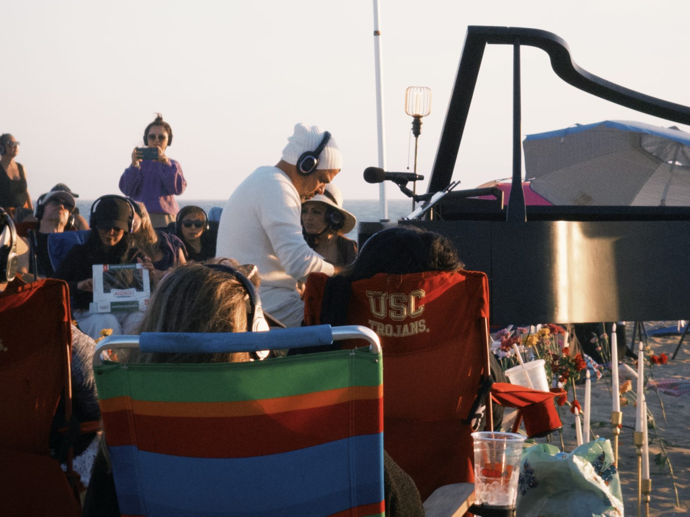

耳機戴上之後，評審離席了
在 Huntington Beach 的沙灘上，我發現今年學會的不是活得更豐盛，而是體驗終於變成自己的了。

體驗是自己的，原來評價也可以是。
那天傍晚，我坐在 Huntington Beach 的沙灘上，戴著耳機，聽一台鋼琴。這場活動叫 MindTravel，形式很特別：鋼琴家 Murray Hidary 在沙灘中央即興演奏，琴聲不經過音響，直接傳進每個人的無線耳機裡。從外面看，這是一場幾乎無聲的音樂會——只剩海浪、風，和沙地上的腳步聲。夕陽把天空染成很淡的粉紫色，沙地上插著鮮花和蠟燭，幾百個人各自躺在椅子上，聽著同一段只有自己聽得見的音樂。
很療癒，也很浪漫。但這篇想記下的不是那個畫面，而是後來我才慢慢看懂的一件事：今年以來，我在自我成長這條路上得到的最大收穫，不只是活得更豐盛、更常感到喜悅——而是體驗這件事，終於長成了我自己的形狀。
耳機拿掉了什麼
先說那副耳機。
一般的演出裡，我們可能會做一件自己沒意識到的事：讀場。什麼時候該鼓掌、旁邊的人有沒有屏住呼吸、這一段是不是「應該」要被感動——我們一邊聽，一邊悄悄用別人的反應校準自己的感受。這不是虛偽，是人的預設值。感受還沒成形，就先被拿去對答案了。
耳機把這條線切斷了。同一個聲源，各自的耳朵。你完全收不到別人的反應，別人也收不到你的。有人閉著眼，有人望著海，有人躺平看天空慢慢變色——每個人都在同一段音樂裡，走著完全不同的路。那個瞬間我發現，「參考別人」這個選項在這種情況下，物理上被拿掉了。
我很沉浸。沉浸的意思是，那個平常站在我身後、隨時準備打分數的評審，暫時離席了。沒有人在問這一刻值不值得、夠不夠特別、我有沒有好好把握。只有琴聲、海風，和一個不需要向任何人交代的我。
評審回來的那一刻
但沉浸總會結束。音樂會散場，那個打分數的聲音總會回來。重點是它回來的時候，用什麼態度對自己說話。
同一天，發生了另一件事，條件跟沙灘完全相反。我帳戶裡一張掛單設錯了，做了一筆不該發生的交易，損失四百多美元。完全可以避免的錯誤，錯得毫無美感。
多數時候，這種時刻回來的評審是嚴厲的：你怎麼會犯這種錯、這筆錢本來可以做什麼、你不是很懂投資嗎。自責、翻舊帳，再把懲罰加上去。我也一度走進了那個節奏——有那麼一段時間，我心裡想的是：如果沒有這個錯誤，我就可以直接去買那張想了很久、卻一直買不下手的演唱會門票了。
然後我聽見了這句話裡的東西。虧損和門票，本來是兩件不相干的事，是我自己把它們綁進了同一個帳戶，再用其中一個去懲罰另一個。看見這條線之後，要做的不是安慰自己，是把線剪掉：錯誤是錯誤，該檢討的是掛單流程；想去的演唱會是想去的演唱會，如果那是真心想要的體驗，它不需要先通過一筆虧損的審核。
那天回來的評審，最後沒有走嚴厲那條路。給出的評語比較接近：嗯，學到了，下次掛單多看一眼。然後呢？票還是去買吧。
小小成就，和它為什麼不是 KPI
我把今年的這個變化，私下稱作一個小小的成就。用「成就」這個詞，我自己是猶豫過的——畢竟我才剛寫過，體驗生活一旦從「行」滑到「果」，就會開始驗收，開始焦慮自己體驗得夠不夠多、夠不夠深。成就聽起來，很像一個果。
但後來我想清楚了它們的差別。KPI 是拿來要求下一次的；而我說的成就，是說完就結束的一句肯定，不附帶下一季的目標。我們心裡都住著不只一個自己——有負責衝刺的、有負責擔心的、有那個很久以前就存在、一直希望被看見的。以前我以為成熟是讓最理性的那個當家，把其他的都管好；現在我覺得，成熟比較像是有能力照顧到每一個部分——包括那個聽到「你很棒」會真心開心的部分。他開心，不代表我的價值需要誰來蓋章；他開心，只是因為他終於等到了那句話，而說話的人是我自己。
這份肯定不會推著我去達成什麼。它做的事情安靜得多：讓心裡保持一種平的狀態，平到下一次想嘗試新東西的時候，起跳的地方不是匱乏，是好奇。
誠實的結算
寫到這裡，如果就這樣收尾，這篇會太漂亮。所以有幾句誠實的話，得記在這裡。
第一，新鮮感目前還是我的扳機。回顧今年那些進入深度沉浸的時刻，大多發生在新的場合、新的形式裡。這說得通：太熟悉的場景，大腦會用預測代替接收；陌生場合的新鮮感讓感官打開接收器。但這也意味著，這個能力有一部分還外包給「新」——條件在幫我。真正完整的版本，應該在一個平凡的週二下午也成立。這部分我還在練習中，而且我知道靠新鮮感開機有它的代價：越常用，同樣的新就越不夠新。所以現在的我，把新體驗當成一個知道用途、也知道劑量的工具，同時練習在不新的日子裡，不把眼前的東西直接跳過。
第二，今年也有很多不如意。金錢的焦慮曾經讓我在一些活動前猶豫、退縮，替想像中的未來省下此刻的體驗。那些焦慮沒有消失，它偶爾還是會在我計劃下一次體驗的時候浮出來。差別在於，現在的我知道：焦慮本身也是一種體驗，它可以在場，但它不必投票。
收尾
回頭看沙灘上的那個傍晚，我最喜歡的其實不是琴聲，是那個結構：幾百個人，同一段音樂，幾百種聽法，而且沒有任何一種需要跟別人對齊。
也許所謂學會用自己的方式體驗人生，說穿了就是這兩秒鐘的事——沉浸的時候，不需要參考誰；回過神來的時候，負責評價的那個人，是站在自己這邊的。
YOUR EARS ONLY 同一段音樂，只有你的聽法。